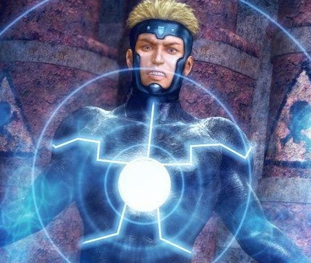
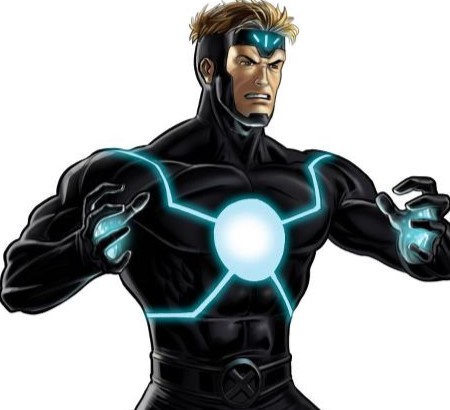
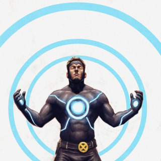
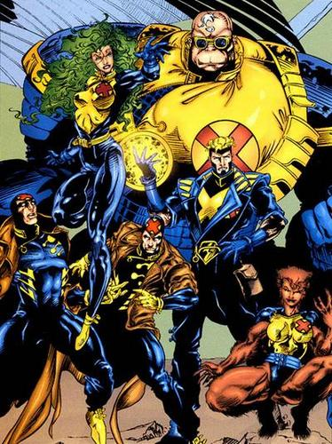

<!DOCTYPE html>
<html></html>
<head>
<title>Havok</title>
</head>
<body> </body>

<link rel="stylesheet" href="css/mystyle.css">

<h1> Havok</h1>


<h4>Marvel superhero or villain</h4>

<!--Navigation-->
<a href="#">ABOUT</a>
<a href="#">ORIGIN</a>
<a href="#">POWER</a>
<a href="#">AFFILIATE</a>


<!--about-->

<h1>About </h1>


<p>One of the sons of Corsair, Alexander "Alex" Summers is the younger brother of the X-Men's Cyclops, and the older brother of Vulcan and the older half brother of Adam X. He often resents Cyclops's authoritarian attitude and reputation as a model member of the X-Men. In contrast, Havok and his longtime love interest Polaris have had a love-hate relationship with the team, often finding themselves roped into it. Both were also members of the 1990s-era Pentagon-sponsored mutant team X-Factor. After X-Factor disbanded, Havok starred in Mutant X, a series in which he explored a strange alternate reality. He has since returned to the X-Men, later taking over his father's role as leader of the Starjammers to bring Vulcan's reign over the Shi'ar to an end.</p>



<!--Origin-->

<h1>Origin</h1>


<p>Alexander Summers was born in Honolulu, Hawaii. He is the second of the three known sons of Christopher Summers, a United States Air Force Major and test pilot, and his wife Katherine Anne. When Alex was a boy growing up in Anchorage, Alaska, United States, his father took the family for a flight in their airplane, which came under attack by a Shi'ar spaceship. As the plane caught fire and was crashing, his parents fastened Alex and his older brother Scott into a parachute and pushed them off the plane in hopes that they would survive.</p>


<!--Power-->

<h1>Power</h1>


<p>Havok is a mutant possessing the power to absorb ambient cosmic energy, process it, and emanate it from his body as waves of energy that heat the air in their path, turning it into plasma in the form of a beam with a tell-tale concentric circle pattern. These waves will emanate from his body in all directions unless he purposefully tries to channel them in a single direction, usually along the length of his arms. This results in control over an extremely powerful sort of destructive force. He is immune to the adverse effects of most forms of radiation and heat. In the past, he was not entirely able to control this ability, which made him a danger to those around him unless he wore a special containment suit equipped with special sensors for measuring and controlling his power output. </p>


<!--Affiliate-->

<h1>Affiliate</h1>



<p>In actuality, Havok was cast into a parallel world where he was the leader of a drastically altered version of X-Factor, known as The Six.[43] In this world, he was the leader of the original X-Men, since his brother Cyclops was abducted by the Shi'ar along with his parents. He found he was married to Madelyne Pryor, with whom he had a son named Scotty, and all his friends were twisted versions of the ones he knew. Despite being unfamiliar with this realm, Havok willingly took over the role of father for Scotty, though the boy knew he was not really his dad.[44] Havok becomes leader of The Six and his adventures in this reality lead to a disaster which leaves most of the superhumans dead. Havok is able to save the world itself before being cast into black nothingness.[45] </p>


<!--Footer-->
<h3>Mark Harold Resueno</h3>
<p>multimedia production student sept 2024

    <a href="https://www.marvel.com/characters/havok" target="_blank">Havok</a>,</p>